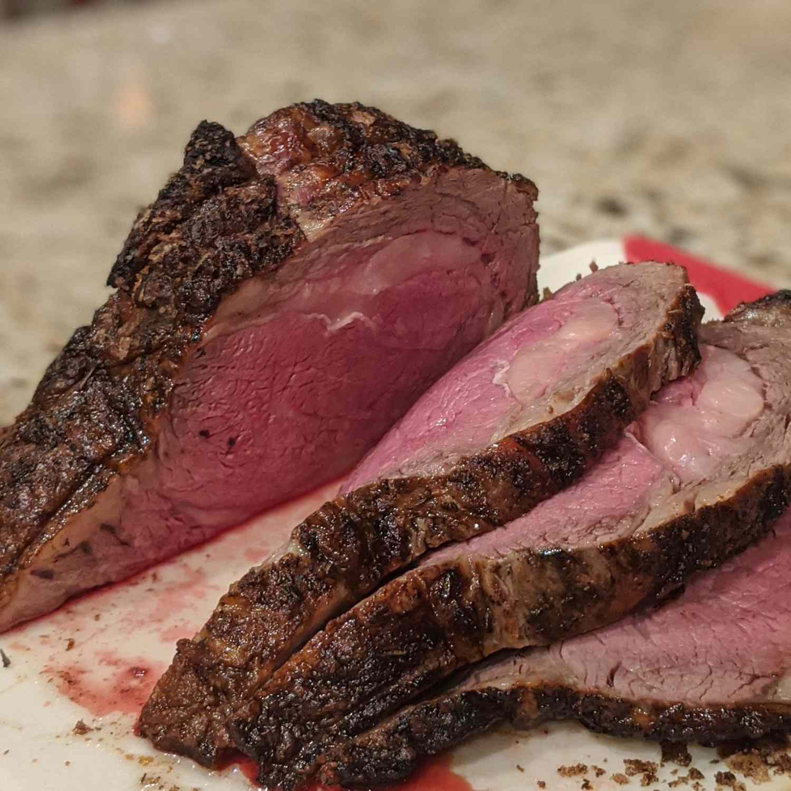

Most prime rib recipes call for very simple seasonings. Prime rib roast doesn't need a marinade or any complicated preparations; the meat speaks for itself. If you'd like, prepare a simple seasoning rub: Fresh herbs, lemon zest, garlic, pepper, and Dijon mustard are all excellent matches for prime rib. But don't salt the roast until right before cooking. To infuse even more flavor, sliver the garlic, make tiny slits in the roast, and insert the garlic bits.